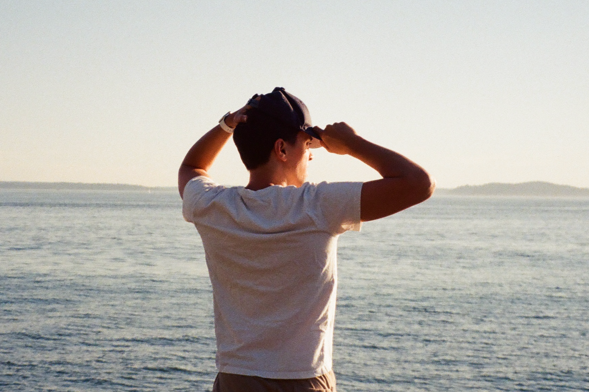

About me
I'm a project manager, web designer and developer based in Seattle, WA with over 5 years of experience building for the web and a lifetime of experience working with technology. I was only about 10 when we first got cable internet at my home and from there I was hooked. I would use platforms like Homestead and Geocities to build websites about the things I was interested in (like Dragon ball Z and beatboxing) and (when I was older) was even the admin to a few online forums.
As I grew older, I became self-taught and proficient in HTML, CSS, and Javascript. One of my first jobs was as a repair technician, fixing mostly iPhones and MacBooks where I continued to hone my technical and problem solving skills, earning several certifications before taking up my current position as a PM.
As a developer with an eye for good design, I have a passion for creating beautiful websites and collaborating with others to envision digital spaces that exceed the needs of the client. I've worked with clients like Seattle Dance Collective, Sound Property Management and iDope Customs.
In my current work as a project manager, I’ve had the privilege of working with marketing, content strategists, writers, UX designers, and business development teams, working closely with all the moving parts of a large business. I've developed a thorough understanding of the content creation lifecycle and an ability to work with and meet the needs of a diverse set of stakeholders.

Paul is a highly strategic, collaborative, proactive and innovative design thinker who continually finds ways to improve and automate our processes, freeing up our team’s capacity to focus on higher-value activities … His ability to shift perspectives, frame problems and ask the right questions is a key ingredient to his success and the success of our team.
Here are a few technologies I’m familiar with (or have recently worked with)
- Javascript (ES6+)
- React
- Power Apps
- Power Automate
- HTML & CSS
- Node.JS
- Python
- WIX
Other Interests
When I’m not in front of a computer, I try to spend as much time outside as possible. I post photos on Instagram and sometimes do write ups on my blog. I’m keenly interested in photography and music production (stemming from the aforementioned beatboxing). I've collaborated with and made beats for some of Seattle's best talents (Grynch, Sol, and RA Scion to name a few). I also made (most of) the beats for Stoned Ape Theory. In my free time, I love playing video games, taking care of my house plants, writing, and finding new bars and restaurants to try with my wife and friends.
Find me on
I'm working on an interative yet light-weight approach to my portfolio. There is much more planned for this site so stay tuned 😎